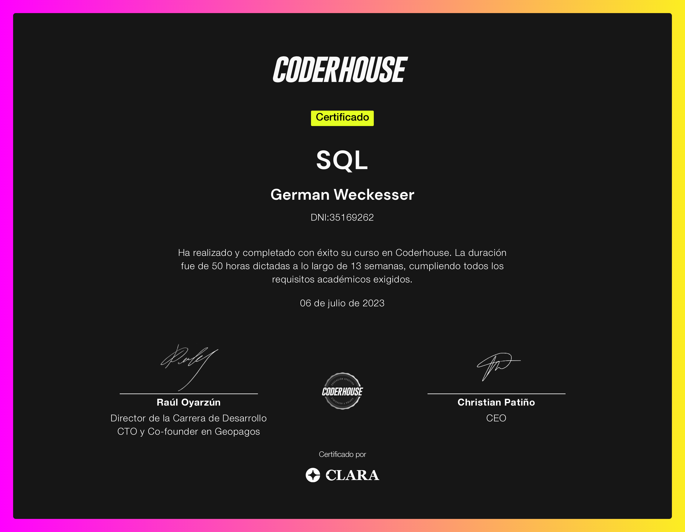

Acerca de mí
Soy Germán, abogado graduado de la USAL, especializado en Derecho Administrativo Económico por la UCA. Con una amplia experiencia litigando en el sector privado y una valiosa trayectoria en el sector público, ahora busco desafíos en el ámbito tecnológico.
Perfil Profesional
A través de mi carrera, he desarrollado habilidades analíticas y de gestión que considero transferibles a múltiples disciplinas. Mi formación jurídica, combinada con mi capacidad de adaptación, me ha preparado para afrontar desafíos innovadores en el mundo del desarrollo y las bases de datos. Mi pasión por la innovación y el dinamismo tecnológico me lleva a explorar nuevas oportunidades donde pueda aportar una perspectiva única y valiosa.
Habilidades
Certificados
SQL
institución emisora:

Data Analytics

institución emisora: